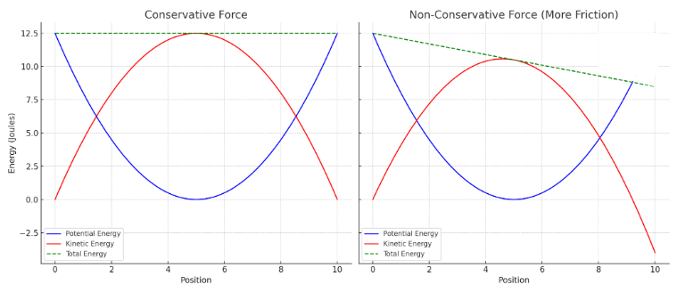

Forces can be classified as conservative or non-conservative based on how they affect the mechanical energy of a system.
Conservative Forces
Conservative forces store energy that can be fully recovered. The work done by these forces is path-independent (only the displacement matters, not distance) and depends only on initial and final positions.
Examples: gravity, spring force, electrostatic force
Conservative: Converts between KE and PE; total ME constant
Non-Conservative: Reduces total ME; energy lost as heat, etc.
Example
A pendulum swinging without air resistance is under conservative forces. If air resistance is introduced, the system becomes non-conservative, and the pendulum eventually stops.
Graphical Representation

Total mechanical energy remains constant for conservative systems but decreases in non-conservative ones.